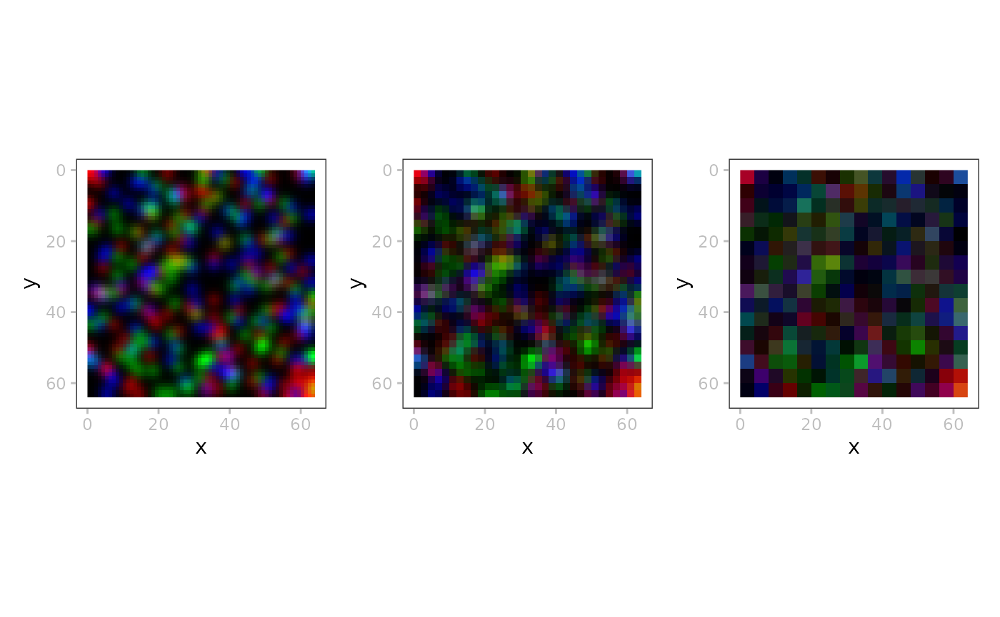
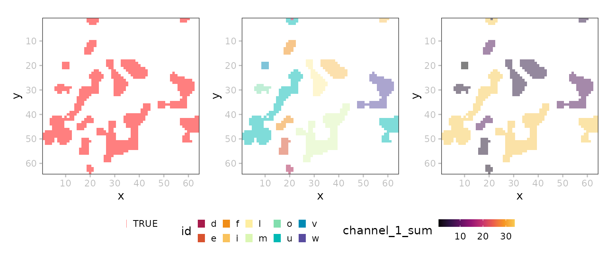
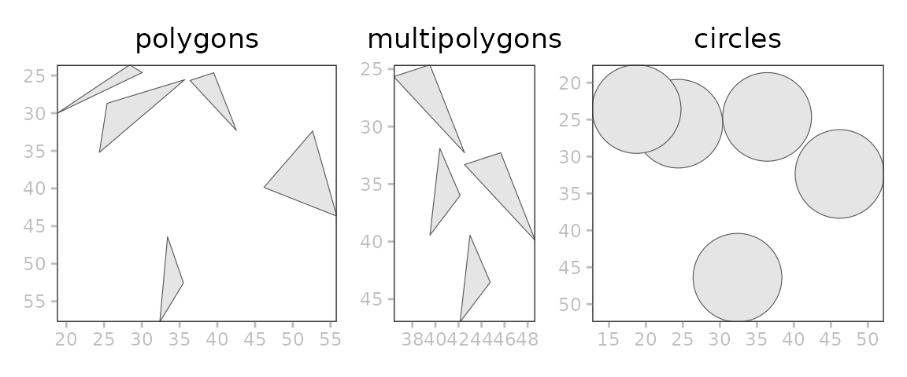

`SpatialData.plot`
Helena Lucia Crowell
Louise Deconinck
Artür Manukyan
Dario Righelli
Estella Dong
Vince Carey
May 09, 2026
Source:vignettes/SpatialData.plot.Rmd
SpatialData.plot.Rmd
library(ggplot2)
library(patchwork)
library(ggnewscale)
library(SpatialData)
library(SpatialData.data)
library(SpatialData.plot)
library(SingleCellExperiment)Introduction
The SpatialData package contains a set of reader and
plotting functions for spatial omics data stored as SpatialData
.zarr files that follow OME-NGFF
specs.
Each SpatialData object is composed of five layers:
images, labels, shapes, points, and tables. Each layer may contain an
arbitrary number of elements.
Images and labels are represented as ZarrArrays (Rarr).
Points and shapes are represented as arrow objects
linked to an on-disk .parquet file. As such, all data are
represented out of memory.
Element annotation as well as cross-layer summarizations (e.g., count matrices) are represented as SingleCellExperiment as tables.
x <- file.path("extdata", "blobs.zarr")
x <- system.file(x, package="SpatialData")
(x <- readSpatialData(x))## class: SpatialData
## - images(2):
## - blobs_image (3,64,64)
## - blobs_multiscale_image (3,64,64)
## - labels(2):
## - blobs_labels (64,64)
## - blobs_multiscale_labels (64,64)
## - points(1):
## - blobs_points (200)
## - shapes(3):
## - blobs_circles (5,circle)
## - blobs_multipolygons (2,polygon)
## - blobs_polygons (5,polygon)
## - tables(1):
## - table (3,10) [blobs_labels]
## coordinate systems(5):
## - global(8): blobs_image blobs_multiscale_image ... blobs_polygons
## blobs_points
## - scale(1): blobs_labels
## - translation(1): blobs_labels
## - affine(1): blobs_labels
## - sequence(1): blobs_labelsVisualization
Images
Image/LabelArrays are linked to potentially multiscale
.zarr stores. Their show method includes the scales available for a
given element:
image(x, "blobs_image")## class: SpatialDataImage
## Scales (1): (3,64,64)
image(x, "blobs_multiscale_image")## class: SpatialDataImage (MultiScale)
## Scales (3): (3,64,64 3,32,32 3,16,16)Internally, multiscale ImageArrays are stored as a list
of ZarrArray, e.g.:
## [,1] [,2] [,3]
## [1,] 3 3 3
## [2,] 64 32 16
## [3,] 64 32 16To retrieve a specific scale’s ZarrArray, we can use
data(., k), where k specifies the target
scale. This also works for plotting:
wrap_plots(nrow=1, lapply(seq(3), \(.)
plotSpatialData() + plotImage(x, i=2, k=.)))
Labels
i <- "blobs_labels"
t <- getTable(x, i)
t$id <- sample(letters, ncol(t))
table(x) <- t
p <- plotSpatialData()
pal_d <- hcl.colors(10, "Spectral")
pal_c <- hcl.colors(9, "Inferno")[-9]
a <- p + plotLabel(x, i) # simple binary image
b <- p + plotLabel(x, i, c = "id", pal=pal_d) # 'colData'
c <- p + plotLabel(x, i, c = "channel_1_sum", pal=pal_c) +
theme(legend.key.width=unit(1, "lines")) # 'assay'
(a | b | c) +
plot_layout(guides="collect") &
theme(legend.position="bottom")
Points
i <- "blobs_points"
p <- plotSpatialData()
# mock up a 'table'
f <- list(
numbers=\(n) runif(n),
letters=\(n) sample(letters, n, TRUE))
y <- setTable(x, i, f)
# demo. viz. capabilities
a <- p + plotPoint(y, i)
b <- p + plotPoint(y, i, "letters") # discrete coloring
c <- p + plotPoint(y, i, "numbers") # continuous coloring
a | b | cShapes
p <- plotSpatialData()
a <- p +
ggtitle("polygons") +
plotShape(x, "blobs_polygons")
b <- p +
ggtitle("multipolygons") +
plotShape(x, "blobs_multipolygons")
c <- p +
ggtitle("circles") +
plotShape(x, "blobs_circles")
wrap_plots(a, b, c)
Layering
p <- plotSpatialData()
# joint
all <- p +
plotImage(x) +
plotLabel(x, a=1/3) +
plotShape(x, 1) +
plotShape(x, 3) +
new_scale_color() +
plotPoint(x, c="genes") +
ggtitle("layered")
# split
one <- list(
p + plotImage(x) + ggtitle("image"),
p + plotLabel(x) + ggtitle("labels"),
p + plotShape(x, 1) + ggtitle("circles"),
p + plotShape(x, 3) + ggtitle("polygons"),
p + plotPoint(x, c="genes") + ggtitle("points"))
wrap_plots(c(list(all), one), nrow=2)
Examples
MERFISH
In this example data, we do not have a label for the
shape polygons. Such labels could be morphological regions
annotated by pathologists.
dir.create(td <- tempfile())
pa <- get_demo_SDdata("merfish")
(x <- readSpatialData(pa))## class: SpatialData
## - images(1):
## - rasterized (1,522,575)
## - labels(0):
## - points(1):
## - single_molecule (3714642)
## - shapes(2):
## - anatomical (6,polygon)
## - cells (2389,circle)
## - tables(1):
## - table (268,2389) [cells]
## coordinate systems(1):
## - global(4): rasterized anatomical cells single_moleculeThere are only 2389 cells, but 3,714,642 molecules, so that we downsample a random subset of 1,000 for visualization:
## class: SpatialDataPoint
## count: 1000
## data(3): cell_type __null_dask_index__ geometry
# layered visualization
plotSpatialData() +
plotImage(x, c="white") +
new_scale_color() +
plotPoint(x, i="1k", c="cell_type", size=0.2) +
new_scale_color() +
plotShape(x, i="anatomical") +
scale_color_manual(values=hcl.colors(6, "Spectral")) 
# bounding-box query
qu <- list(xmin=1800, xmax=2400, ymin=5000, ymax=5400)
bb <- geom_rect(do.call(aes, qu), data.frame(qu), col="yellow", fill=NA)
y <- SpatialData(images=list("."=do.call(query, c(list(x=image(x)), qu))))
plotSpatialData() + plotImage(x) + bb | plotSpatialData() + plotImage(y)VisiumHD
Mouse intestine, 1GB; 4 image resolutions and 3 shapes at 2, 8, and 16 m.
dir.create(td <- tempfile())
pa <- MouseIntestineVisHD(target=td)
(x <- readSpatialData(pa, images=4, shapes=3))
qu <- list(xmin=100, xmax=300, ymin=200, ymax=400)
bb <- geom_rect(do.call(aes, qu), data.frame(qu), col="black", fill=NA)
y <- SpatialData(images=list("."=do.call(query, c(list(x=image(x)), qu))))
plotSpatialData() + plotImage(x) + bb | plotSpatialData() + plotImage(y)MibiTOF
Colorectal carcinoma, 25 MB; no shapes, no points.
dir.create(td <- tempfile())
pa <- SpatialData.data:::.unzip_spd_demo(
zipname="mibitof.zip",
dest=td, source="biocOSN")
(x <- readSpatialData(pa))
pal <- hcl.colors(8, "Spectral")
wrap_plots(nrow=1, lapply(seq(3), \(.)
plotSpatialData() + plotImage(x, .) +
plotLabel(x, ., c = "Cluster", pal=pal))) +
plot_layout(guides="collect")CyCIF (MCMICRO)
Small lung adenocarcinoma, 250 MB; 1 image, 2 labels, 2 tables.
dir.create(td <- tempfile())
pa <- SpatialData.data:::.unzip_spd_demo(
zipname="mcmicro_io.zip",
dest=td, source="biocOSN")
(x <- readSpatialData(pa))Getting channel names for the image:
Plotting with multiple image channels:
plotSpatialData() + plotImage(x,
ch=chs,
c=grDevices::palette.colors(length(chs), palette = "Polychrome 36")
)We can specify contrast limits for each channel via the
cl argument, but if not provided, they will be
automatically computed as the 5th and 95th percentiles of the pixel
intensities for each channel.
IMC (Steinbock)
4 different cancers (SCCHN, BCC, NSCLC, CRC), 820 MB; 14 images, 14 labels, 1 table.
dir.create(td <- tempfile())
pa <- SpatialData.data:::.unzip_spd_demo(
zipname="steinbock_io.zip",
dest=td, source="biocOSN")
x <- readSpatialData(pa)channels
plotSpatialData() + plotImage(x,
i="Patient3_003_image",
ch=c(6, 22, 39),
c=c("blue", "cyan", "yellow"))contrasts
i <- image(x, "Patient3_003_image")
image(x, "crop") <- i[, 200:400, 200:400]
lapply(list(c(0.2, 1), c(0, 0.8), c(0, 1.2)), \(.) {
plotSpatialData() + plotImage(x,
i="crop",
ch=c(6, 22, 39),
cl=list(1, 1, .),
c=c("blue", "cyan", "yellow")) +
ggtitle(sprintf("[%s, %s]", .[1], .[2]))
}) |> wrap_plots(nrow=1) + plot_layout(guides="collect")Masking
Back to blobs…
x <- file.path("extdata", "blobs.zarr")
x <- system.file(x, package="SpatialData")
x <- readSpatialData(x, tables=FALSE)
i <- "blobs_circles"
x <- mask(x, "blobs_points", i)
(t <- getTable(x, i))
p <- plotSpatialData() +
plotPoint(x, c="genes") +
scale_color_manual(values=c("tomato", "cornflowerblue")) +
new_scale_color()
lapply(names(c <- c(a="red", b="blue")), \(.)
p + plotShape(x, i, c=paste0("gene_", .)) +
scale_color_gradient2(
low="grey", high=c[.],
limits=c(0, 8), n.breaks=5)) |>
wrap_plots() + plot_layout(guides="collect")
# compute channel-wise means
i <- "blobs_labels"
table(x) <- NULL
x <- mask(x, "blobs_image", i, fun=mean)
(t <- getTable(x, i))
# visualize side-by-side
ps <- lapply(paste(seq_len(3)), \(.)
plotSpatialData() + plotLabel(x, i, c = .) +
ggtitle(paste("channel", ., "sum")))
wrap_plots(ps, nrow=1) & theme(
legend.position="bottom",
legend.title=element_blank(),
legend.key.width=unit(1, "lines"),
legend.key.height=unit(0.5, "lines"))